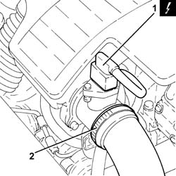
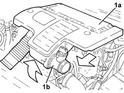
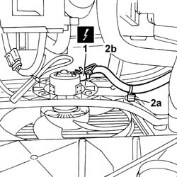
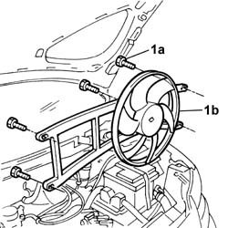

1088E09 radiator cooling fan - r r with air conditioner
- Path
- Procedures > 10 ENGINE UNIT > 1088 ENGINE COOLING > 1088E coolant temperature control devices > 1088E09 radiator cooling fan - r r with air conditioner
- Kind
- repair procedure (removal / refitting; the operation number is the code)
- Applies to
- engines: 1.3 JTD 16v; all production periods
- Interactive page
- https://sloeber94.github.io/elrnDB-fPnd/en/#/2752638
Applies to: engines: 1.3 JTD 16v; all production periods
 Removing
Removing
 Refitting
RefittingPlace the car on a lift.
Disconnect the battery negative terminal.
1. Disconnect the electrical connection from the air flow meter.
 | Name | Connector |
|---|---|---|
1 | Air flow meter | K41 |
2. Loosen the band and disconnect the the turbocharger air inlet sleeve from the rigid pipe, air flow meter side.

Applies to: engines: 1.3 JTD 16v; all production periods
1. Remove the air filter (1a) complete with air flow meter (1b) by releasing from the underlying pins and then from the rear fastenings.

Applies to: engines: 1.3 JTD 16v; all production periods
1. Disconnect the fan's electrical connection.
| Name | Connector |
|---|---|---|
1 | Engine electric fan motor | N11 |
2. Open the fastening spring (2a) and move the fan wiring (2b) aside.

Applies to: engines: 1.3 JTD 16v; all production periods
1. Undo the fixing bolts (1a) and remove the radiator cooling fan (1b).

Applies to: engines: 1.3 JTD 16v; all production periods
Refitting
RemovingFit the fan in place and tighten the fixing bolts.
Connect the fan electrical wiring and secure the wiring to the fastening clips.
| Name | Connector |
|---|---|---|
- | Engine electric fan motor | N11 |
Fit the air filter, complete with air flow meter, in place.
Connect the air intake sleeve to the turbocharger, air flow meter side, and tighten the band.
Connect the electrical connection to the air flow meter.
| Name | Connector |
|---|---|---|
- | Air flow meter | K41 |
Connect the battery negative terminal.
Remove the vehicle from the lift.